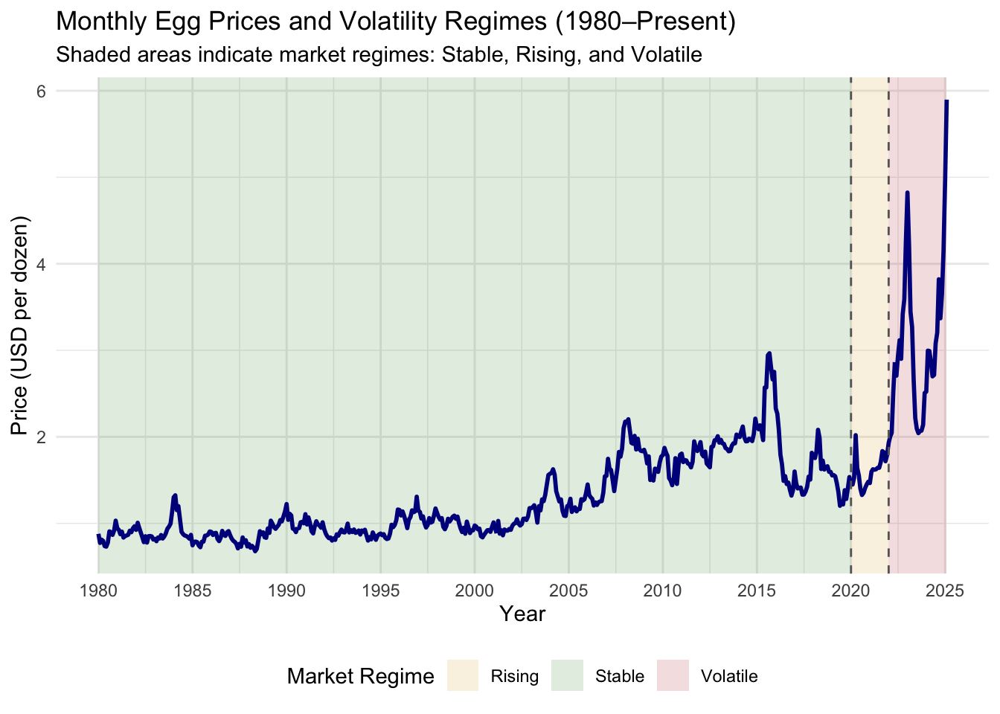
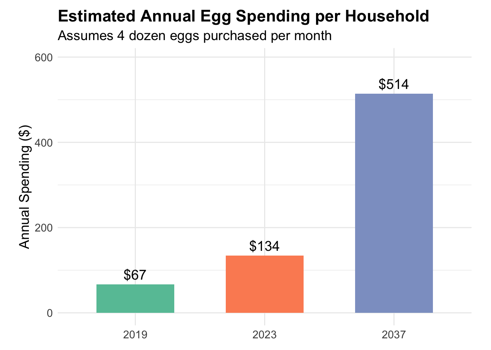

Egg prices tell more than just a story about breakfast staples — they show how data, economic forces, and market behaviors shape what we pay at the grocery store. Here’s what the data exposed, what matters most for consumers, and how to use this knowledge to shop smarter in a changing market.
One major takeaway is that not every transformation helps. Adjusting for inflation using the Consumer Price Index (CPI) initially seemed like a way to make comparisons fairer. However, this adjustment dampened sharp price movements — the very signals time series models rely on. In this case, inflation-adjusted data concealed the true volatility driving consumer costs. Raw price data — inflation and all — ultimately provided clearer signals. This highlighted a critical principle: not all data transformations improve clarity. Sometimes, simpler is better.
We also saw how a single new data point can shake up a model. For instance, a sudden price jump in early 2025 disrupted existing trends and significantly altered the forecast. This showed just how sensitive time series models can be to new information — and why small changes can lead to big shifts in prediction accuracy.
Crucially, how that data is added matters. We found that incorporating new data directly into the source file — rather than appending it dynamically in code — prevents duplicate entries, ensures consistency, and improves model performance. When a new row is hard-coded in a script, it can unintentionally be re-added each time the code runs, skewing results. Storing changes directly in the dataset simplifies the workflow, reduces errors, and ensures the model sees the new point as part of the historical record — not a future event. This small adjustment boosted our forecasting precision and helped maintain the integrity of the overall analysis.
Lastly, we improved our workflow by shifting from Jupyter Notebooks to R Markdown. While Jupyter is great for exploration, it’s not ideal for producing cohesive, shareable results — especially on websites. R Markdown integrates code, outputs, and narrative more smoothly, making the process more efficient and reproducible.
Digging into monthly retail egg prices from 2000 through 2025 revealed several important trends and insights — not just about prices themselves, but about the deeper forces driving them.
For nearly two decades, egg prices hovered in a relatively narrow band: about $1.00 to $1.50 per dozen. That changed dramatically in 2020. Since then, prices have repeatedly spiked — hitting $4.82 in January 2023 and again nearing $4.50 in early 2025. Unlike past spikes, these recent increases haven’t fully receded. The data signals a permanent shift to a higher price baseline.

From 2000–2019, price swings were rare and moderate — often tied to seasonal cycles. Post-2020, volatility nearly doubled. Price changes of over $0.50 within a few months have become common. This makes it harder for consumers to rely on past pricing patterns and adds unpredictability to grocery budgets.
Egg prices still tend to rise in winter and early spring — around holidays like Thanksgiving and Easter — and dip in summer. However, since 2020, this seasonal cycle has been interrupted by broader market forces. The largest price surges in recent years have occurred outside the usual windows, suggesting external shocks now have greater influence than before.
We tested a variety of potential drivers using correlation and regression analysis. Surprisingly, headline-grabbing issues like avian flu outbreaks and energy prices showed weak or inconsistent relationships with egg prices. Instead, the strongest correlations were:
Corn prices (as feed for hens): r ≈ 0.64
Inflation (CPI): r ≈ 0.59
Disposable income per capita: r ≈ 0.47
These results suggest that egg prices are increasingly tethered to macroeconomic trends — not just food-specific supply chain disruptions.
Using clustering analysis on smoothed monthly price movements, we uncovered three distinct pricing regimes:
Stable (2000–2019): Predictable prices with minor seasonal shifts
Rising (2020–2021): Clear upward trend with moderate volatility
Volatile (2022–present): High prices with large, irregular fluctuations
Recognizing these regimes helps explain why strategies that worked pre-2020 (like stocking up before winter) may not be as effective today.
Time series models, including ARIMA and Holt-Winters exponential smoothing, project continued price growth — reaching around $7.32 per dozen by 2028 and potentially surpassing $10.00 by 2037 if current trends persist. While exact numbers vary by model, the direction is consistent: egg prices are not returning to past norms.
The changing egg market isn’t just an economic curiosity — it affects everyone’s grocery bill. For consumers, this shifting landscape offers both challenges and opportunities:
Plan with New Norms in Mind: Low, steady prices are a thing of the past. Adjust your grocery budget to accommodate more persistent and possibly rising egg prices.
Buy Smarter by Season: Shopping just before peak holiday seasons — or stocking up during off-peak lulls — can lead to real savings. Shifting baking-heavy tasks to off-peak months helps too.
Use Forecasts to Get Ahead: While models don’t guarantee the future, they provide valuable directional insight. Use them to time purchases, negotiate bulk orders, or explore alternatives.
Understand Market Shifts to Stay Informed: Recognizing that we’re in a new, more volatile era of egg pricing helps you avoid surprises and make better-informed shopping decisions.
Support Smarter Policy: Since inflation and feed costs—not diseases or energy—drive prices the most, policies that address inflation and commodity pricing may be more effective for food prices than reactive supply chain fixes.
Egg prices are harder to predict than ever — but with the right tools, you can stay ahead. According to our projections, egg prices could more than triple from their pre-2020 levels by 2037. For an average household, this could mean spending $350–$400 more per year on eggs alone.

## Projected Household ImpactIn 2019, annual spending on eggs was about $67.
By 2023, that spending had doubled to around $134.
In 2037, based on forecasted prices, annual spending could exceed $500 — nearly four times more than in 2023, and almost an 8x increase from 2019.
Egg prices are rising sharply, and not just temporarily. If the current trend continues, consumers will pay substantially more for the same quantity of eggs.
This sharp rise in spending underscores the growing budget burden of inflation in everyday grocery staples — especially for families that consume eggs regularly.
It’s a clear visual of why consumers need to plan ahead, consider alternatives, and monitor food price trends more closely.
Use these insights to your advantage:
Plan purchases around seasonal trends.
Avoid peak pricing periods.
Consider alternatives when prices spike.
With just a few smart shifts, you can stretch your grocery dollars and navigate the new egg economy like a pro. Don’t get caught off guard — crack the code on egg prices and shop with confidence. In a market this unpredictable, being informed is no longer optional — it’s essential. Staying informed on price trends is your best bet for keeping eggs — and your budget — from cracking.